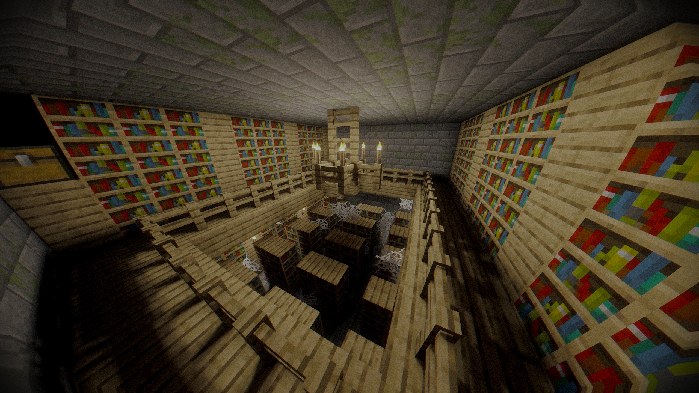
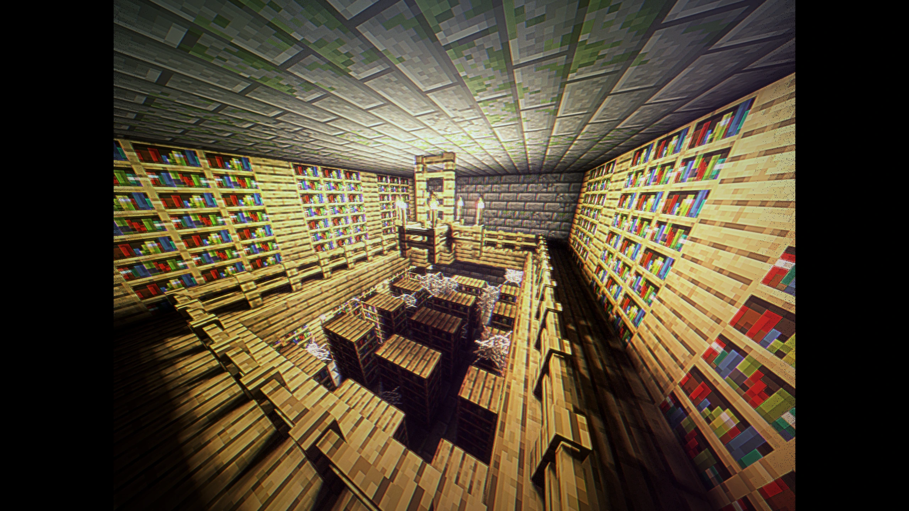
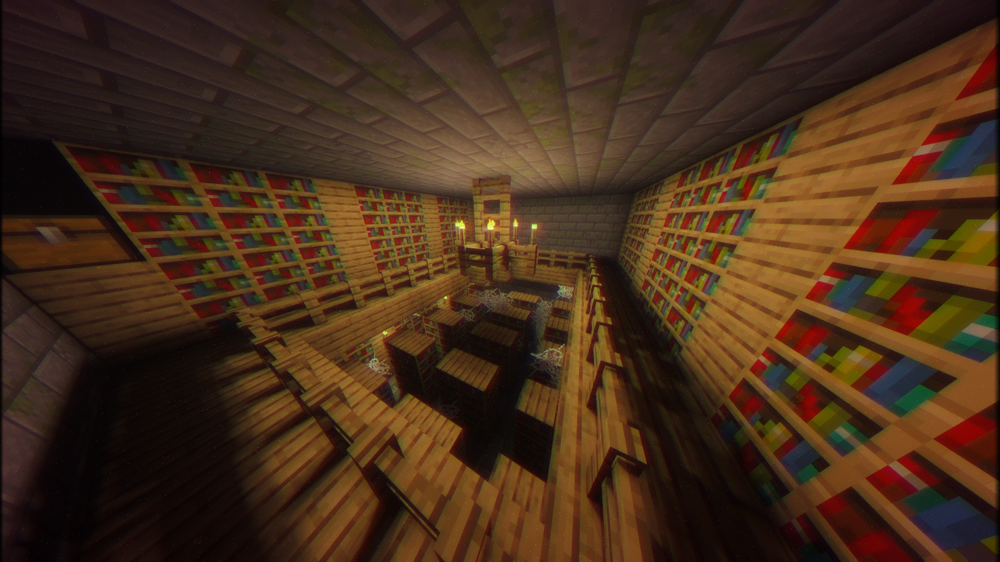
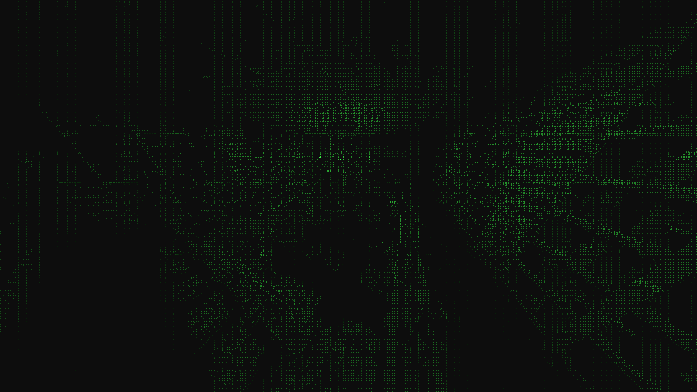
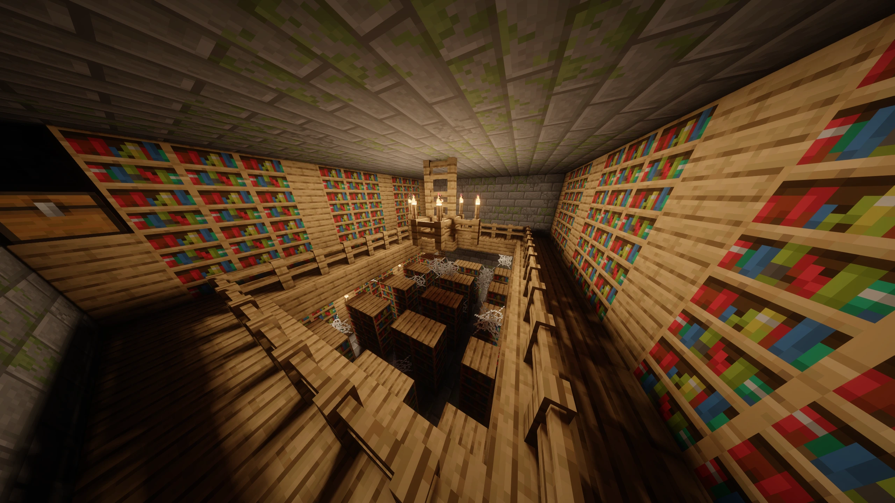
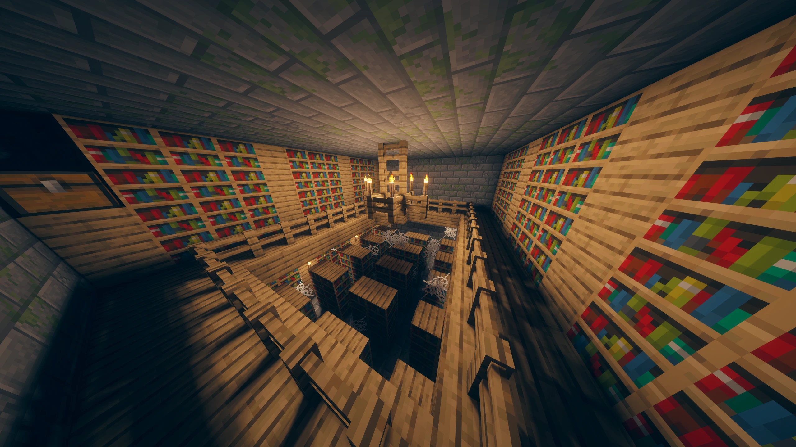

BetterVoxels
Шейдер для Minecraft на основе Rethinking Voxels и Complementary: освещение с трассировкой путей, объёмные облака и вода с рябью.
Все легендарные функции, которые хотелось видеть в шейдере
Собраны вместе, оптимизированы и доведены до ума.
Свет отскакивает от поверхностей и окрашивается их цветом. Трассировка путей настроена так, чтобы работать на Iris.
Облака на основе Nubis 2017, Nubis Cubed и других статей, с физикой, которая решает, где облаку появиться.
Больше 1 700 слайдеров и 400 переключателей в 12 вкладках. Любой эффект можно перенастроить или выключить прямо в меню шейдера.
У каждого из 64 биомов свой цвет тумана, цвет и сила лучей света. На границах биомов цвета плавно перетекают, а при желании эффект доходит и до неба.
Тени, облака, звёзды, туманность и северное сияние живут по одним плавным часам, поэтому ничего не отстаёт и не перескакивает.
- 7 палитр северного сияния и 5 палитр заката, или случайный закат каждый день.
- Объёмный туман, дальняя дымка, туман в пещерах и лучи света.
- Времена года с осенними цветами, радуги и опция «Нет дождя над облаками».
- Better Thunder: в грозу слой облаков опускается, а молнии вспыхивают внутри облаков.
Дальний ландшафт получает тот же туман, дымку, времена года, свет, тени и затенение, что и ближний.
Посмотрите на лампу — мир вокруг неё уходит в тень. Ламп больше — темнеет сильнее. Яркий день при этом остаётся как есть.
Реалистичная вода и интерактивная рябь, колышущаяся листва, параллакс-окклюзия, сгенерированные нормали, покрытые текстуры, светящиеся руды и обводка блока, которая повторяет текстуру, а не коробку.
Облака Nubis Extended
Объёмные облака в небе, с физикой спавна. Включены по умолчанию во всех профилях. Нижний и верхний ярусы плывут с разной скоростью, у каждого свои области облаков.
Живая погода
По небу плывут области высокого и низкого давления. Каждая ночь решает, насколько облачным будет завтра, а дождь постепенно затягивает небо.
Облака растут сами
Температура, влажность и устойчивость решают, где появится облако. Кучевые растут с дневным теплом и тают к закату, слоистые лежат низко влажным утром.
Свет сквозь облака
Многократное рассеяние и серебряная кайма к солнцу. Тени облаков на земле и отражения в воде. Лучи маяков и молнии светятся внутри облаков.
Постобработка
Три страницы симуляции камеры и плёнки. Всё складывается вместе.
BodyCam: Эффект нательной камеры, искажение по краям и ночное видение, которое само включается, когда сцена темнеет. Режим от LoLip_p.
2KS. Вид как с видеокамеры, перенесён из шейдерпака 2KS с разрешения автора (SonicallGameX) вместе с большей частью его настроек.
Старая камера. Строки развёртки, свечение люминофора, изогнутый экран, искажения плёнки, хроматическая аберрация и шум синхронизации.
ASCII. Весь кадр перерисовывается живой сеткой символов.
- 16 тонмапперов, среди них AgX со своими образами, ACES, Gran Turismo, Hable, Lottes и PBR Neutral.
- Баланс белого и трёхканальный грейдинг.
- Цветовые пространства до Rec.2020.
- Ночное видение, которое забирает цвет из темноты.
Фильтры (среди них City Night), кинематографические полосы, зерно плёнки и вкладка Fun с 13 шуточными эффектами.






7 пост-профилей
Готовые образы в один клик, выбираются в начале меню. Каждый задаёт тонмаппер, палитру, контраст и цепочку эффектов. Они отдельны от профиля качества: как выглядит картинка и насколько тяжело работает шейдер — два разных выбора.
Профили качества
От Potato до Ultra Max, по умолчанию High+.
Ванилла и Better Voxels
Одна сцена без шейдера и с ним. Потяните разделитель.
Better Voxels 1.8